10 部片单 · 恐怖 / 科幻 / 惊悚 / 悬疑 / 剧情
| # | 片名 | 类型 | 评分 / 状态 |
|---|---|---|---|
| 01 | 南京照相馆 | 剧情 / 历史 / 悬疑 | 8.7 / 8.1 / 9.7 |
| 02 | 一战再战 | 剧情 / 惊悚 / 犯罪 | 8.1 / 96% / 95 |
| 03 | 罪人 | 恐怖 / 剧情 / 音乐 | 7.7 / 97% / 7.7 |
| 04 | 揭秘日 | 科幻 / 惊悚 | 6.4 / 6.5 / 年度惊悚片第 4 |
| 05 | 暗流低语 | 恐怖 / 声音恐怖 | 73% / 50% / 2200 万美元 |
| 06 | 木乃伊 | 恐怖 / 身体恐怖 | 46% / 6.4 / 6.4 |
| 07 | 索命哨 | 恐怖 / 悬疑 / 超自然 | 63% / 200 万美元 / 约 500 万 |
| 08 | 他们要杀了你 | 恐怖 / 动作 / 黑色喜剧 | 63% / 77% / 6.5 |
| 09 | 死亡真面目 | 恐怖 / 悬疑 / 元恐怖 | 68% / 64% / 1978 年邪典 |
| 10 | 禁果 | 恐怖 / 喜剧 / 邪典 | 74% / 迪亚波罗·科蒂 / 同名舞台剧 |
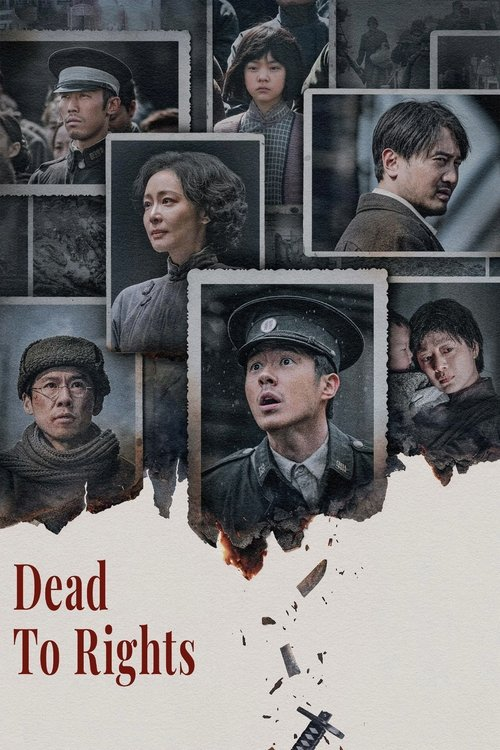
南京照相馆 Dead to Rights
他们原本只想多活一天，最后却决定把底片送出去。
剧情梗概
1937 年南京。邮差苏柳昌为活命冒充照相馆学徒，被日军翻译王广海胁迫着冲洗底片。吉祥照相馆渐渐挤满了躲进来的人——老板老金一家、龙套演员林毓秀、巡警宋存义。他们在红色暗房里一张张冲出照片，直到某一天，显影液里浮现出来的不是「纪念照」，而是屠城的罪证。从那一刻起，「活下去」和「让底片留下来」变成了两件互相冲突的事。
亮点
- 取材真实：南京大屠杀期间罗瑾、吴旋守护「京字第一号证据」底片。剧组用三年研读近千万字文献、上万张历史图片；上海车墩搭建约 2.5 万㎡ 实景，1:1 复刻南京城墙，并在南京文物局指导下耗时两个月还原照相馆细节。
- 克制的暴力：婴儿被摔死放在画面后景、对女性的暴行不正面拍摄，把沉重留在情感层面而不是感官冲击——这是全片最被影评人称道的处理。
- 群像扎实：王传君的翻译「半睡半醒」地做着走狗，直到最后一刻才醒；王骁凭照相馆老板老金拿下第 38 届百花奖最佳男配角。
- 代表中国内地角逐第 98 届奥斯卡最佳国际影片，并拿下长春电影节金鹿奖最佳影片、最佳导演、最佳编剧三项。
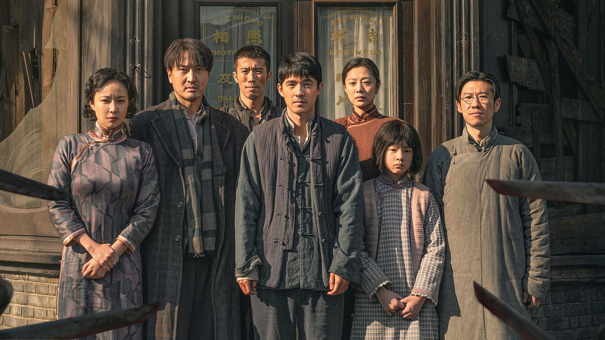
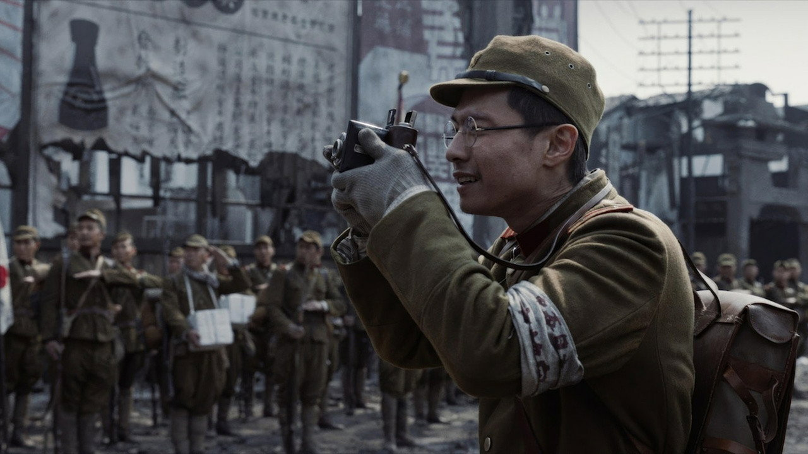
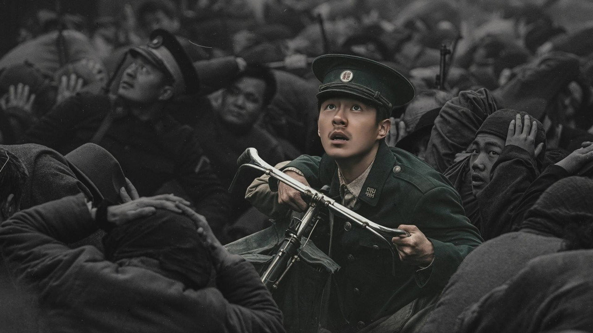
导演与主创 · 他们的历史作品
说明：主创头像与代表作品海报均取自 TMDB「Known For」，已下载到本地（assets/movies/），离线打开也能显示；若本地图缺失会自动回退到 TMDB 直链。图片版权归各片方所有。
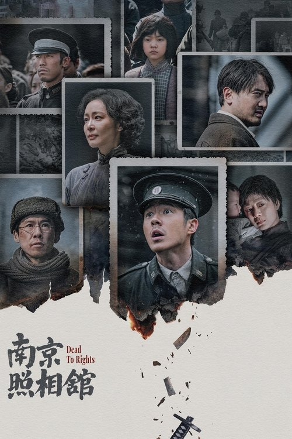
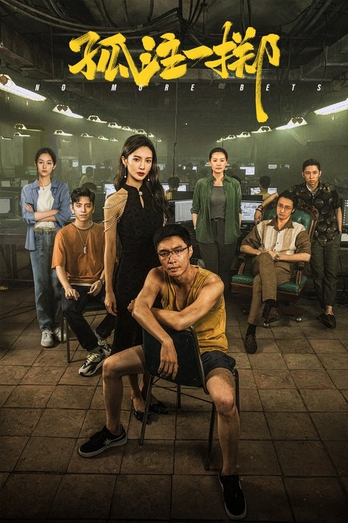
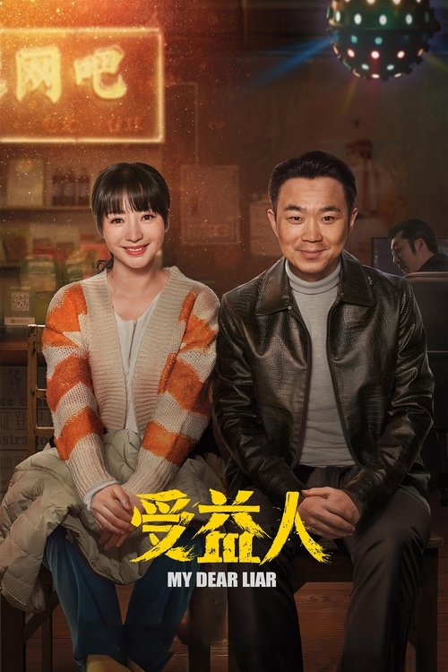
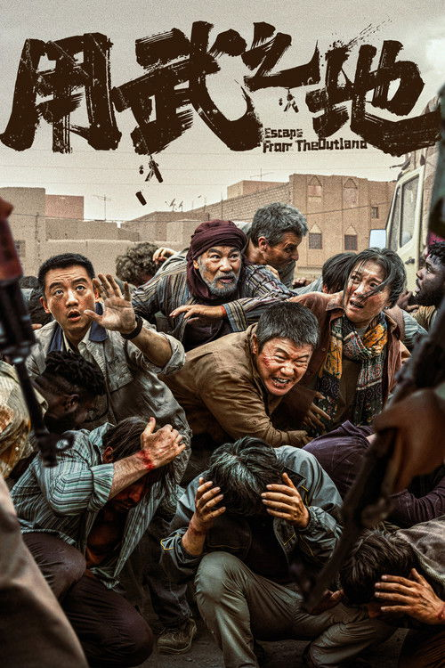
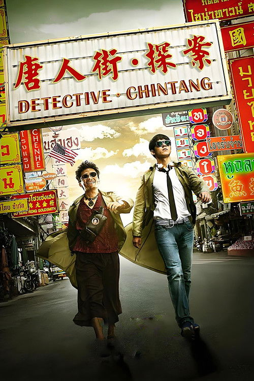
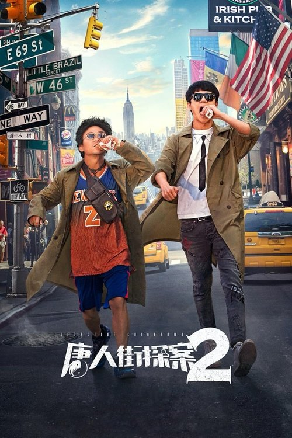
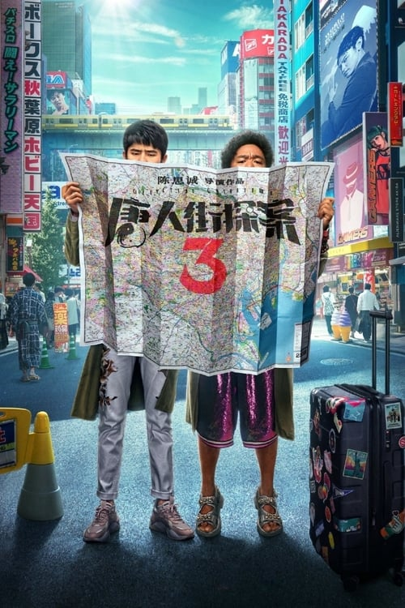
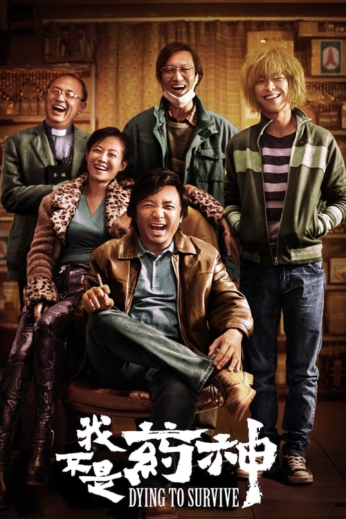
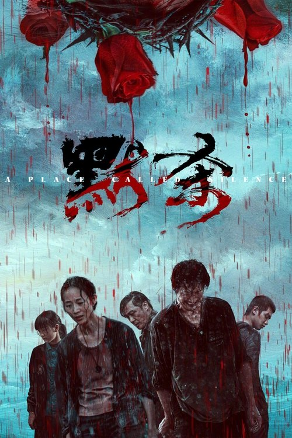
短评（轻微剧透）
这片子最狠的地方不是暴行本身，是「看见」这件事的代价。阿昌第一次在显影液里认出那些画面时，他还只是个想活命的邮差；等他决定把底片缝进衣服，他就不是了。申奥把相机快门和枪械上膛做声画对剪——在一座所有人都在按快门的城市里，照片既是杀人的证据，也是杀人的理由。前半段你会一直担心「下一个死的是谁」，后半段问题悄悄换成「他们这么做值不值」。结尾那句「铭记历史，吾辈自强」放在这里并不煽情，因为前面 130 分钟已经把这句话挣出来了。至于底片最后有没有送出去、谁活着走出去——我不说，你自己看。
为什么值得一看
想看一部真正有分量的国产剧情片；对「大历史、小切口」叙事有兴趣的人。情绪极重，不适合想放松的夜晚。
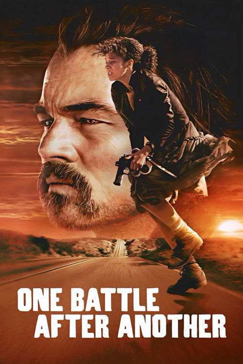
一战再战 One Battle After Another
十六年前他炸过楼，十六年后他连接头暗号都记不全。
剧情梗概
鲍勃曾是激进组织「法式 75」里负责爆破的那个人，如今是靠酒精和大麻度日的落魄中年人，和女儿薇拉在偏远的庇护社区里隐姓埋名。宿敌洛克乔上校在失踪十六年后重新现身，薇拉也在同一天消失。鲍勃不得不重新上路——问题是他连组织的暗号都记不全了，而每一个愿意帮他的人，都各有各的算盘。
亮点
- 保罗·托马斯·安德森（PTA）自编自导，改编自托马斯·品钦小说《葡萄园》。第 98 届奥斯卡拿下最佳影片、最佳导演、最佳男配角（西恩·潘）、最佳剪辑、最佳改编剧本、最佳选角六项，是当晚最大赢家。
- 沙漠公路那场追车戏是近年被讨论最多的动作场面之一，实景拍摄，几乎不用绿幕；PTA 说他开拍前两个月重看了《花样年华》和《重庆森林》。
- 强尼·格林伍德的配乐以钢琴独奏为主，被不少观众形容为「先锋到会劝退人」——喜欢的人会非常喜欢。
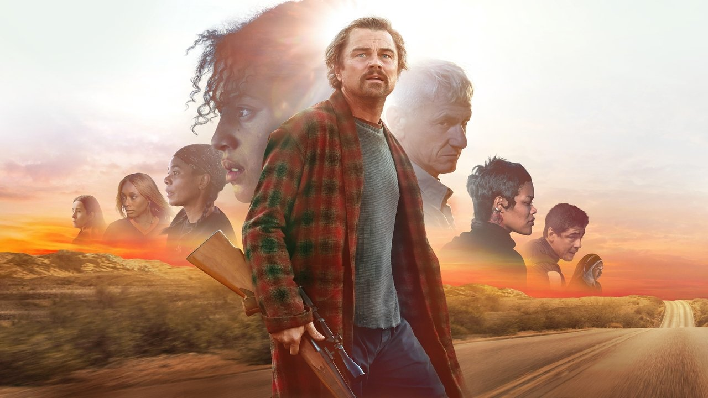
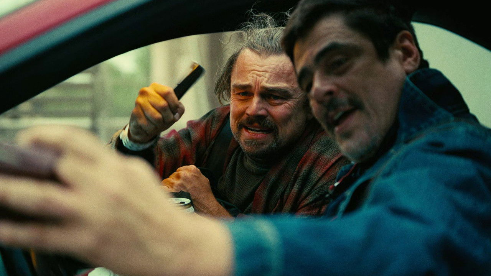
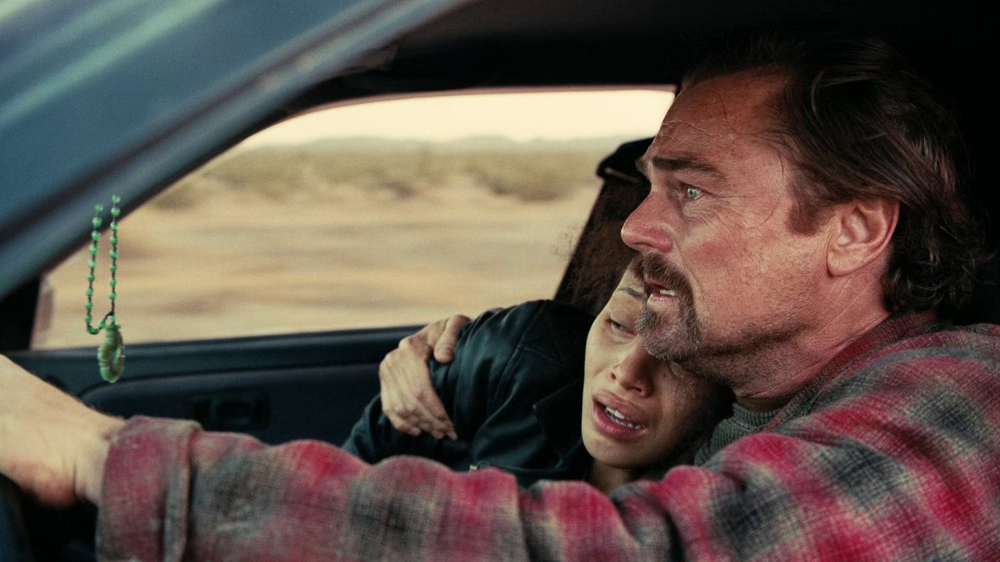
导演与主创 · 他们的历史作品
说明：主创头像与代表作品海报均取自 TMDB「Known For」，已下载到本地（assets/movies/），离线打开也能显示；若本地图缺失会自动回退到 TMDB 直链。图片版权归各片方所有。
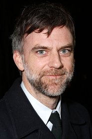
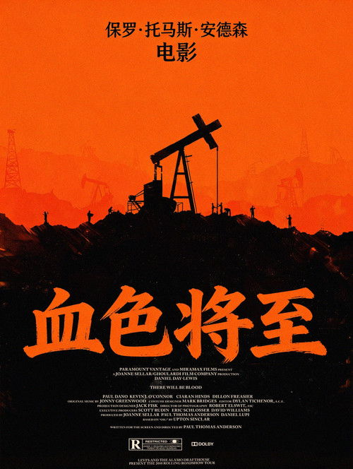
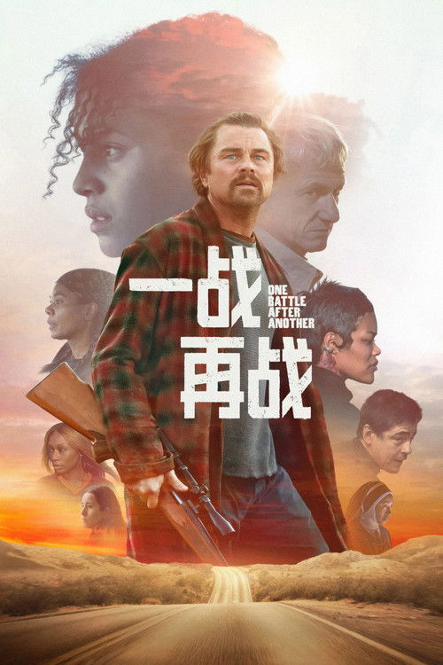
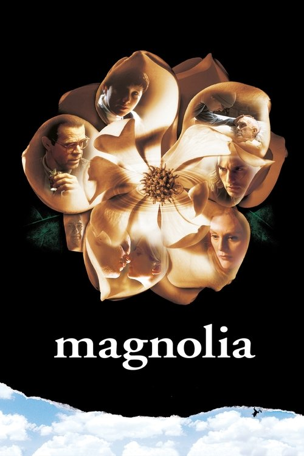
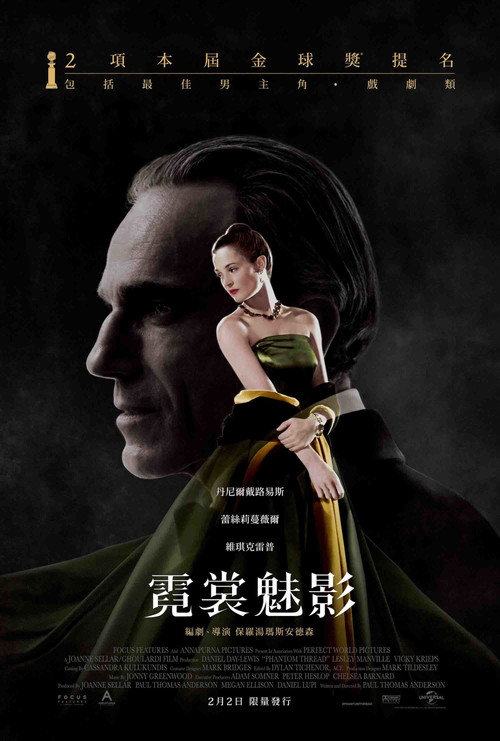
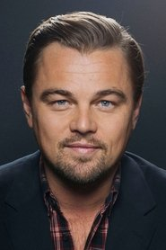


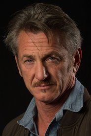


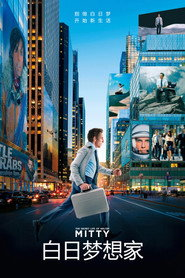
短评（轻微剧透）
它讲的根本不是革命，是「革命之后」。PTA 把品钦式的荒诞塞进一个父亲的日常里：一个曾经准备改变世界的人，现在最擅长的事是忘记接女儿的暗号。洛克乔是全片最恐怖的角色——他不是反派，他是那种把仇恨当成纪律、把纪律当成活下去方式的人。中段有一场戏，鲍勃在电话里对不上接头暗号，对方的声音一秒比一秒冷，那种「时代已经把你甩下车」的窒息感，比任何动作场面都狠。西恩·潘那个角色的结局血肉模糊，你会觉得他活该，也会觉得他可怜。162 分钟不短，但几乎每一场都在往前推。
为什么值得一看
想看本届奥斯卡最大赢家；喜欢 PTA、品钦、群像与政治寓言的人。配乐和节奏挑人，想轻松一下的慎选。内地票房仅 5000 万出头，全球票房 1.7 亿对 1.3 亿成本，是典型的「叫好不叫座」。
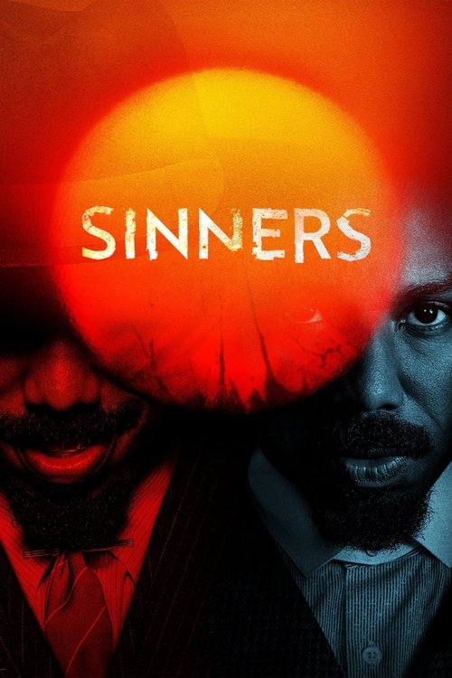
罪人 Sinners
他们只想给同胞开一间能放心喝酒的屋子，直到有人敲了门。
剧情梗概
1932 年密西西比三角洲。双胞胎兄弟斯莫克与斯塔克——两个角色都由迈克尔·B·乔丹饰演——在一战的战壕和芝加哥黑帮里滚过一遭，带着现金和一卡车烈酒回到家乡，买下一座废弃磨坊，打算开一家属于黑人社群的自动点唱机酒吧。开业当晚，蓝调响彻沼泽地。也正是在那一夜，某种更古老的东西闻声而来：三 K 党的威胁与吸血鬼的围猎同时降临。
亮点
- 第 98 届奥斯卡 16 项提名（史上最多），最终拿下最佳男主角（迈克尔·B·乔丹）、最佳原创剧本、最佳摄影、最佳配乐四项。Cinemascore 观众评分 A——该体系四十多年来第一部拿到 A 的恐怖片。
- 全片使用 IMAX 胶片摄影机拍摄。路德维格·戈兰松的配乐把密西西比蓝调、爱尔兰民谣与福音搅在一起，音乐本身就是叙事的一部分，拿下奥斯卡与金球奖最佳配乐。
- 迈克尔·B·乔丹一人分饰两角，兄弟俩的姿态、语速、呼吸节奏完全分开；迈尔斯·卡顿饰演的蓝调少年萨米是真正的灵魂角色。
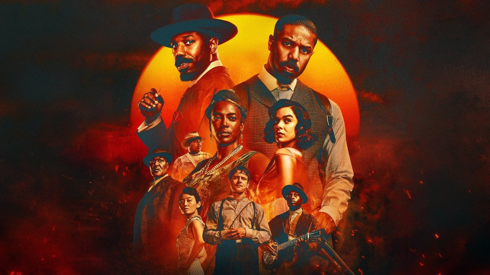
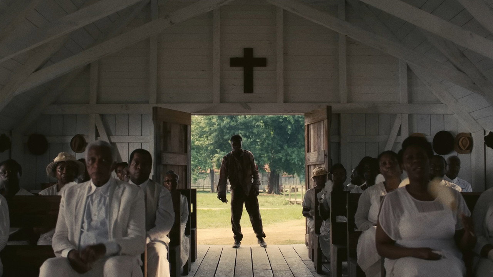
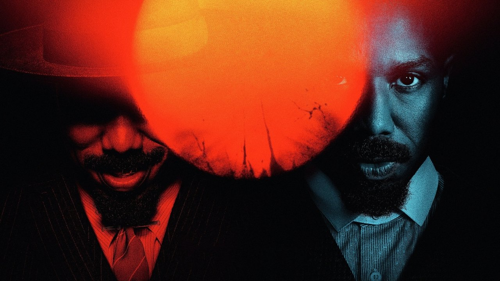
导演与主创 · 他们的历史作品
说明：主创头像与代表作品海报均取自 TMDB「Known For」，已下载到本地（assets/movies/），离线打开也能显示；若本地图缺失会自动回退到 TMDB 直链。图片版权归各片方所有。

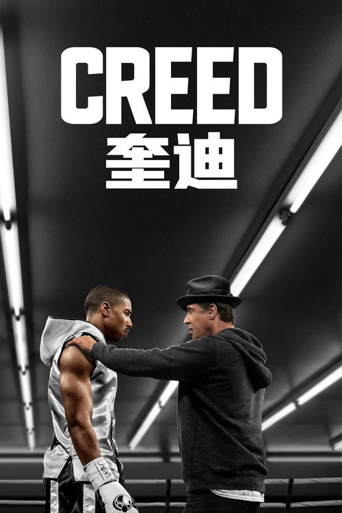
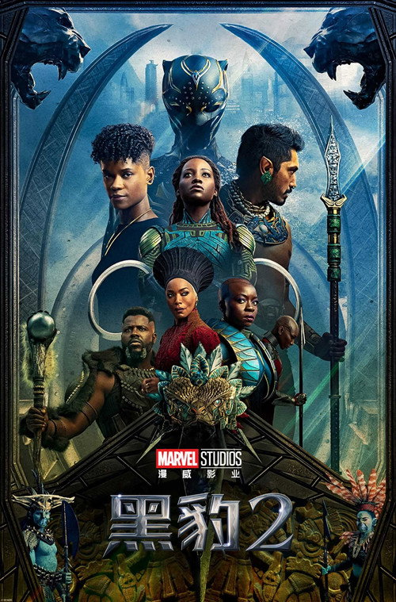
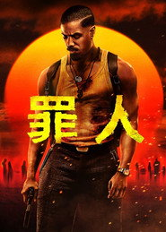
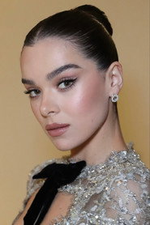


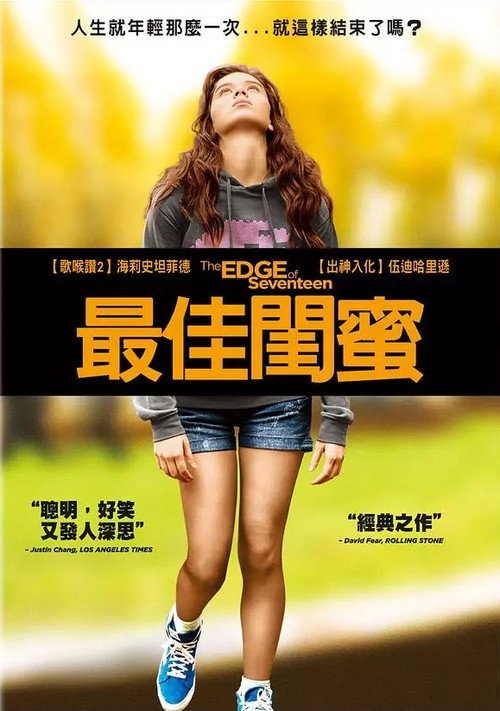
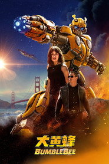
短评（轻微剧透）
库格勒把吸血鬼放进了种族压迫的历史里，而且没有把任何一方简化。真正聪明的处理是：吸血鬼给出的「永生与共同体」听起来居然有点像解放——它只要求你放弃名字、放弃血缘、放弃你来自哪里，换一个永远不会散场的派对。于是问题变得很坏：对一群被剥夺了一切的人来说，这算交易还是救赎？中段那场跨越时间的音乐戏是全片最狂的一笔，蓝调、非洲鼓、电子乐在同一个舞池里叠在一起，你会明白库格勒想说的是「音乐是唯一没被夺走的东西」。后半小时血浆管够，但它真正吓人的不是牙齿，是那个「要不要留下」的选择。
为什么值得一看
想看近年完成度最高的类型片之一；喜欢音乐、民俗恐怖、历史隐喻的观众。137 分钟且前半段铺垫慢，歌舞与血浆混搭的调性不是所有人都吃得下。
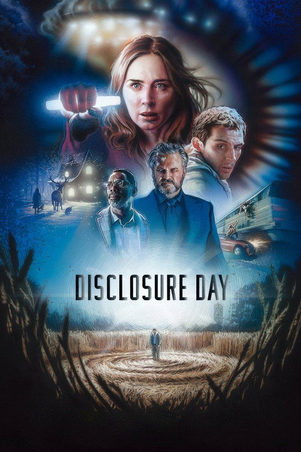
揭秘日 Disclosure Day
如果全世界同时知道答案，那还叫「真相」吗？
剧情梗概
一名网络安全专家从秘密机构盗走了外星遗物和一段机密影像，开始逃亡；堪萨斯城的新闻女主播玛格丽特在直播中突然说出一串没人听得懂的语言，随即被同一批人盯上。两人在逃亡路上相遇，慢慢发现他们的童年早就被同一件事缠在一起——而他们正是揭开「揭秘日」的关键。
亮点
- 斯皮尔伯格自 2005 年《世界大战》之后第一次真正回到「外星接触」题材，但走的是谍战惊悚路线，不是灾难片。
- 卡司：艾米莉·布朗特、乔希·奥康纳、科林·费尔斯、科尔曼·多明戈、伊芙·休森、怀亚特·罗素。
- Collider 把它排进 2026 年度惊悚片第 4 名，称其为「今年最被低估的电影之一」；豆瓣 6.4 说明国内观众分歧不小。
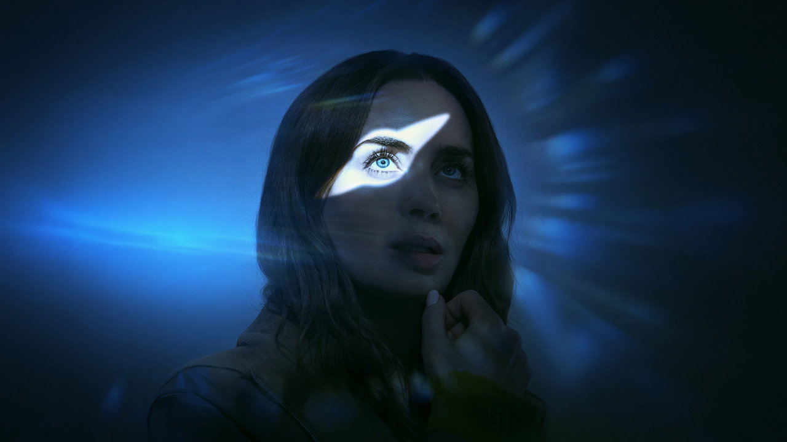
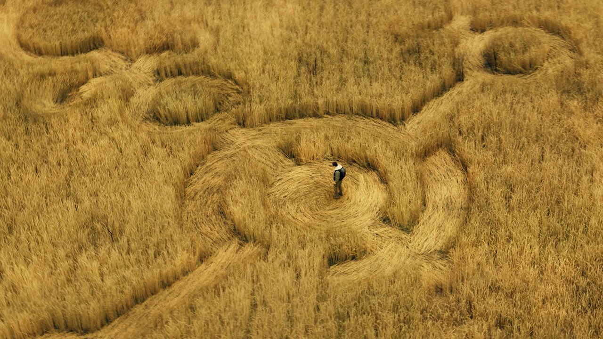
导演与主创 · 他们的历史作品
说明：主创头像与代表作品海报均取自 TMDB「Known For」，已下载到本地（assets/movies/），离线打开也能显示；若本地图缺失会自动回退到 TMDB 直链。图片版权归各片方所有。


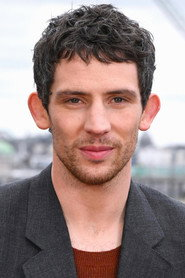
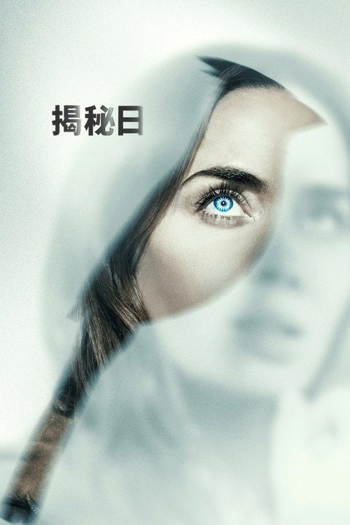

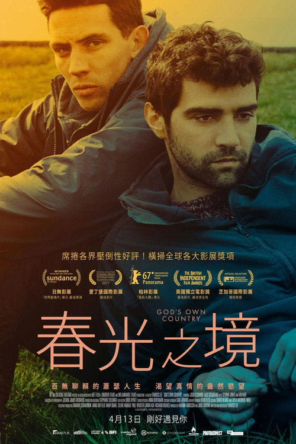

短评（轻微剧透）
斯皮尔伯格这次感兴趣的显然不是飞船，而是「信息被公开」这件事本身会怎样撕开一个社会。片子里最让人不安的不是外星人，而是每个人拿到同一段影像之后各自解读出的东西——有人看见救赎，有人看见审判，有人看见生意。布朗特的玛格丽特是全片的锚：一个靠说话吃饭的人，突然说出自己听不懂的话，那种失控比任何特效都惊悚。谍战外壳确实拖慢了前半段，也多少浪费了这套卡司；但结尾那场「要不要播」的戏，是老斯这几十年最锋利的一次自问——他拍了一辈子让观众相信影像的电影，这一次他问的是：如果我们真的知道了，世界会更好吗？
为什么值得一看
斯皮尔伯格影迷；喜欢「高概念 + 群像 + 冷战式谍战」的科幻惊悚。口碑两极（豆瓣 6.4），期待爆米花式外星大战的会失望。
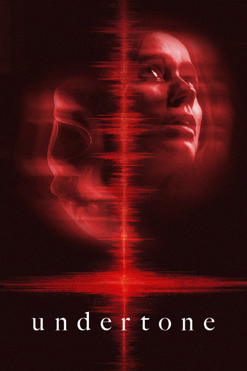
暗流低语 Undertone
她的工作是拆穿鬼故事，直到鬼故事开始拆穿她。
剧情梗概
艾薇是一档超自然播客的主持人，和搭档贾斯汀一起鉴定听众投稿的「灵异录音」。她同时在家照顾已经昏迷的母亲。某天贾斯汀收到一组匿名寄来的音频，一共十段。她戴上耳机一段段听下去，录音里描述的事开始在她自己的房子里发生——而这栋房子里，除了她和母亲，不该有别人。
亮点
- 导演伊恩·图森的长片处女作，成本 50 万美元，全球票房约 2200 万，44 倍回报。几乎不靠视觉特效，全部恐怖来自声音设计。
- 全片在导演多伦多的童年故居里拍摄，观众从头到尾被困在同一栋房子里。妮娜·基里和饰演母亲的米歇尔·杜奎特是全片唯二出现在画面中的人，其余角色只有声音。
- 斯蒂芬·金公开推荐，称它「噩梦一般」，并夸妮娜·基里「一个人扛起了整部电影」。图森凭此片拿下了《鬼影实录 8》的导演合约。
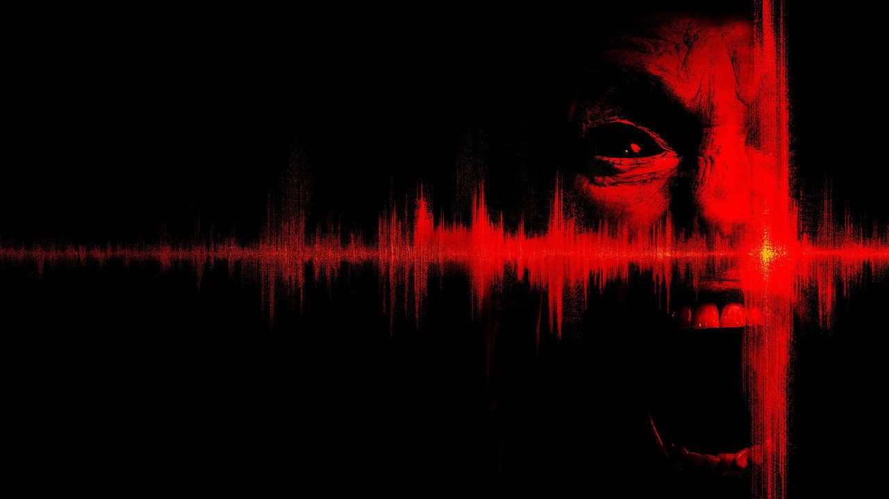
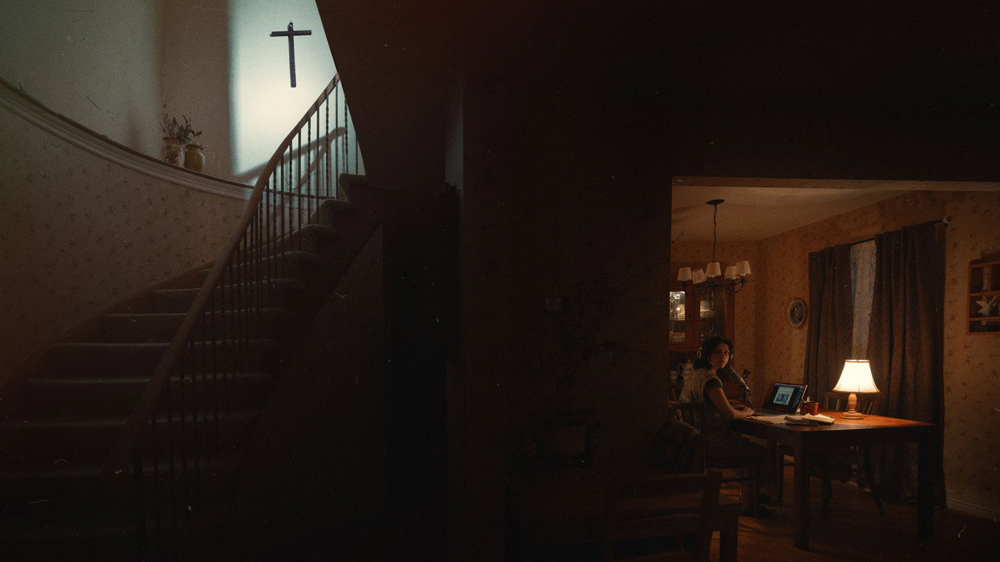
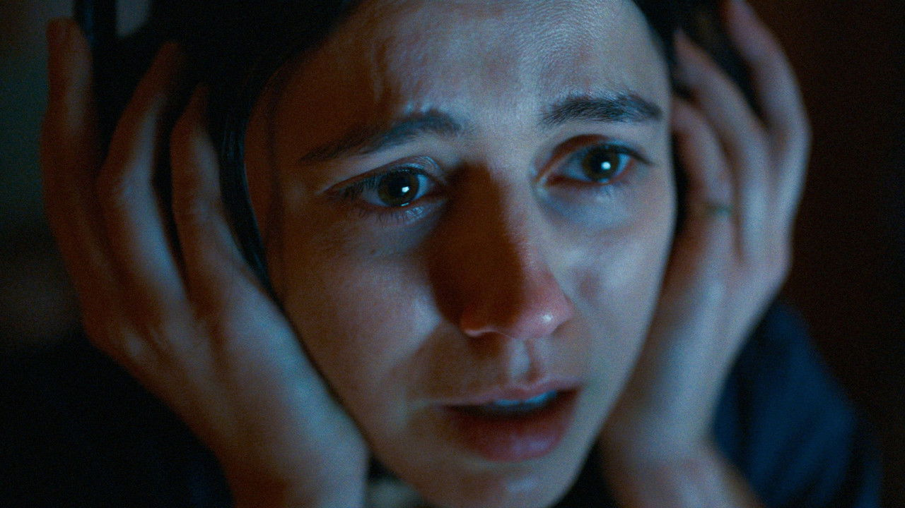
导演与主创 · 他们的历史作品
说明：主创头像与代表作品海报均取自 TMDB「Known For」，已下载到本地（assets/movies/），离线打开也能显示；若本地图缺失会自动回退到 TMDB 直链。图片版权归各片方所有。
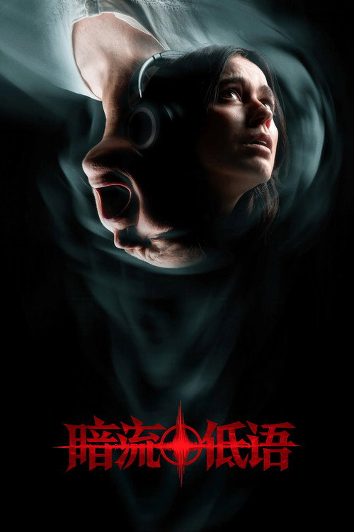
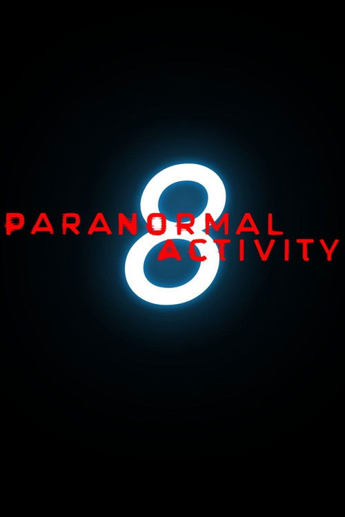
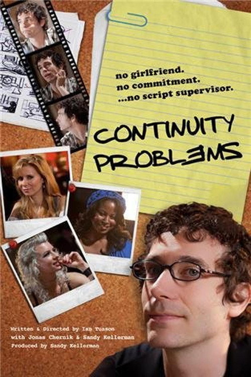
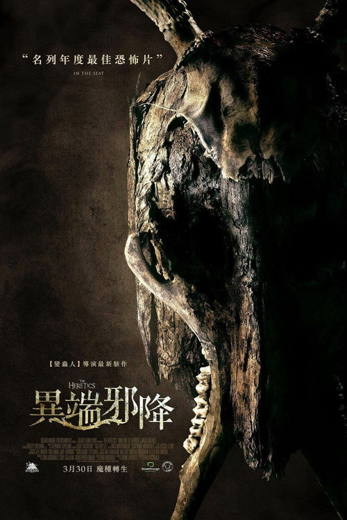
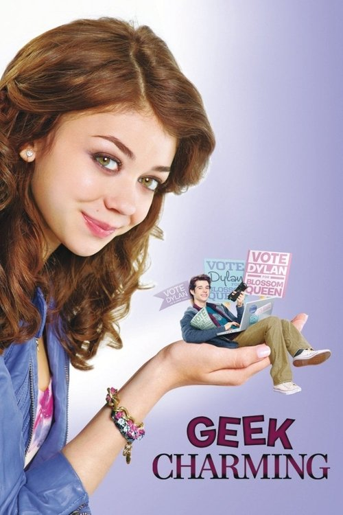

短评（轻微剧透）
这是一部「必须戴耳机看」的电影，也是少数真的配得上这句话的电影。图森把最老套的恐怖配方——黑屋、夜半异响——拆掉视觉，只留声音：地板的一声轻响、隔壁房间一次不该有的呼吸、降噪耳机开启之后突然出现的空白。最狠的设计就是耳机本身：艾薇一戴上降噪耳机，房间里的声音就消失了，于是「安静」变成了最危险的状态，观众和她一起被剥夺听觉，只能靠想象去补完黑暗里有什么。它的争议也在这里——观众爆米花指数只有 50%，嫌它闷的人是真的会睡着。但如果你受得了慢火，最后那几段录音的处理会让你散场后不敢戴耳机。
为什么值得一看
想要一次真正「从耳朵进来」的恐怖体验；喜欢《Skinamarink》《鬼影实录》《夜屋》式慢烧氛围的观众。几乎没有 jump scare、没有怪物造型，追求强刺激的会失望。HBO Max 上线后曾登顶，Netflix 海外 19 个国家进入前十。
木乃伊 The Mummy
失踪八年的女儿回来了——但回来的不是她。
剧情梗概
记者查理·坎农和妻子拉丽莎的女儿凯蒂八年前在埃及沙漠失踪。某一天，凯蒂被发现在一具石棺里「活着」回来了。一家人重新坐回餐桌旁，而家里的气味、声响、腐烂的痕迹开始一点点浮出来。拉丽莎和查理选择了同一种应对方式：假装一切正常，继续把这顿饭吃完。
亮点
- 《鬼玩人崛起》导演李·克罗宁自编自导，温子仁 + 杰森·布卢姆联合制片。灵感来自 1932 年原版《木乃伊》，与布兰登·费舍那版环球系列毫无关系。
- 系列首部 R 级作品。木乃伊造型参考了爱尔兰国家博物馆的沼泽尸体，去掉了裹尸布和伊姆霍特普，全片在爱尔兰和西班牙实拍。
- 成本 2200 万，全球票房 9060 万，HBO Max 上线首日即登顶美国区榜首。主演杰克·莱诺（《仲夏夜惊魂》）、莱娅·科斯塔（《维多利亚》）、梅·卡拉美维（《月光骑士》）。
导演与主创 · 他们的历史作品
说明：主创头像与代表作品海报均取自 TMDB「Known For」，已下载到本地（assets/movies/），离线打开也能显示；若本地图缺失会自动回退到 TMDB 直链。图片版权归各片方所有。


短评（轻微剧透）
影评人几乎一边倒地不买账（烂番茄 46%，共识是「形式感强，但被过长的片长和熟悉的惊吓淹没」），可我觉得它抓住了比大多数木乃伊电影更实在的东西：一个家庭拒绝承认自己已经失去女儿。克罗宁的恐怖从来不在怪物身上，在那顿「假装正常的晚餐」上——腐烂的气味、不属于人类的声响、越来越长的沉默，父母两个人都在拼命不看。这个设定本身就是恐怖片最古老的母题之一：吓人的不是亡者归来，是活人不肯放手。它确实有 133 分钟塞不下的冗余，第三幕也滑回了跳吓加音效轰炸的老路；但娜塔莉·格蕾斯演的凯蒂那种「既像女儿又不像」的分寸感，值一张票。
为什么值得一看
身体恐怖爱好者；温子仁 / 布伦屋粉；觉得《鬼玩人崛起》还行的观众。影评口碑差（RT 46%），节奏和时长是硬伤，抱着看大片的期待进场会失望。
索命哨 Whistle
别吹。声音响起的那一刻，你自己的死法就已经来找你了。
剧情梗概
一群格格不入的高中生意外捡到一枚阿兹特克「死亡哨」。吹响它，招来的不是抽象的死神，而是你将来死法本身——具象地、一步一步地来追你。他们必须搞清楚这东西从哪来、怎么才能结束；而每搞清楚一件事，就少一个人。
亮点
- 导演科林·哈迪（《圣魇》《鬼修女》），改编自短篇小说。主演达芙妮·基恩（《金刚狼3》X-23、《死侍与金刚狼》）首次担纲恐怖片女主。
- 配角阵容里有苏菲·奈丽丝、珀西·海因斯·怀特、《权力的游戏》的米歇尔·费尔利，以及《僵尸肖恩》的尼克·弗罗斯特。
- 把《死神来了》的「宿命不可逃」和《微笑》的「诅咒传递」揉在一起，又套了一层校园青春剧的人物关系，在一众续集里算原创设定。
导演与主创 · 他们的历史作品
说明：主创头像与代表作品海报均取自 TMDB「Known For」，已下载到本地（assets/movies/），离线打开也能显示；若本地图缺失会自动回退到 TMDB 直链。图片版权归各片方所有。


短评（轻微剧透）
设定不算新，执行却比预期扎实。哈迪聪明的地方是把「死法」做成了具体的东西——不是一刀毙命，而是每个人最怕的那种结局慢慢靠近。这让死亡场面天然带着人物信息：你怎么死，暴露了你是谁。达芙妮·基恩的克里斯是全片的重心，她把一个「既不讨喜又让人心疼」的女孩演得很有说服力。中段确实有校园片的套路感，演员也明显太大了；但最后半小时节奏起来了，几处死亡设计相当有想象力。认真提醒一句：字幕走完别急着关，还有一场。
为什么值得一看
喜欢《死神来了》《微笑》《它在身后》这类「诅咒传递」设定的观众；达芙妮·基恩的影迷。套路感强、演员年龄偏大是主要槽点，豆瓣尚未形成稳定评分。
他们要杀了你 They Will Kill You
她来应聘保洁，结果发现自己是那份祭品。
剧情梗概
艾莎看到一则高薪招工广告：纽约一栋豪华高层公寓 The Virgil 招客房清洁。她上门应聘，开门的莉莉以为她是新来的清洁工——其实艾莎是来找失踪的妹妹玛丽亚的。她很快就搞清楚了：这栋楼里住着一整个撒旦教团，而她是他们等了很久的那份「祭品」。剩下的 90 分钟，艾莎从顶楼一路往下打。
亮点
- 俄罗斯导演基里尔·索科洛夫（《美味尸餐》）执导，《小丑回魂》的安德斯·穆斯切蒂与芭芭拉·穆斯切蒂兄妹制片。
- 扎姬·比茨（《死侍2》《小丑》）大开杀戒，烂番茄影评人共识写着：「一场高度风格化的大乱斗……比茨的凶悍让这场流血变得有感染力」。帕特里夏·阿奎特（《人生切割术》）演反派，汤姆·费尔顿、希瑟·格拉汉姆、Myha'la 也在阵容里。
- 结构是循环式的：一栋楼、一波波上来的杀手，被《杀死比尔》《老男孩》《杀出个黎明》混剪过一遍。
导演与主创 · 他们的历史作品
说明：主创头像与代表作品海报均取自 TMDB「Known For」，已下载到本地（assets/movies/），离线打开也能显示；若本地图缺失会自动回退到 TMDB 直链。图片版权归各片方所有。

短评（轻微剧透）
这是一部不装深刻、只想把你按在沙发上爽 94 分钟的片子，而且它非常清楚自己要什么。索科洛夫把整栋楼做成了一个垂直游乐场：电梯井、走廊、套间，每一层换一种打法。比茨的状态好得离谱——她不是那种「先被吓到再反杀」的套路，她从第一分钟就能打，问题只是她不知道自己在打什么。穆斯切蒂兄妹制片，所以血是真的多，笑点也是真的野。中段重复感确实存在，几场打戏的调度略显单调；但阿奎特那条线给了它一个意外的落点——她不是纯粹的恶人，她在护着自己的家人。观众分 77% 高于影评人 63%，说明它在大屏幕上比在影评里好玩得多。
为什么值得一看
想看一部不用动脑的血浆动作片；扎姬·比茨 / 帕特里夏·阿奎特影迷；《失败者》《准备好了没》那一路黑色喜剧的爱好者。重复、血腥、没深度是它的特点，也是它的缺点。
死亡真面目 Faces of Death
她每天的工作，是判断视频里的人是不是真的死了。
剧情梗概
玛戈特是短视频平台 Kino 的内容审核员，每天的工作就是看，然后点「通过」或「删除」。某天她在网站深处刷到一组视频——那些死亡场景和 1978 年那部臭名昭著的《死亡真面目》里一模一样，但这一次看起来是真的。她上报，被要求别管；她继续查，于是她自己成了那个上传者的下一个素材。
亮点
- 1978 年邪典《死亡真面目》的「重构版」。原版是伪纪录片，因内容在数十个国家被禁、靠盗版录像带流传；新版换成完整的剧情片结构，烂番茄 68% 对原版 21%。
- 导演丹尼尔·戈德哈伯与《cam》编剧伊萨·马齐再度合作，延续了他们「把屏幕本身变成恐怖现场」的作者路线（前作还有《如何炸毁一条输油管道》）。
- 芭比·费雷拉（《亢奋》）主演，《怪奇物语》的达克雷·蒙哥马利演反派，Charli XCX 也在演员表里。
导演与主创 · 他们的历史作品
说明：主创头像与代表作品海报均取自 TMDB「Known For」，已下载到本地（assets/movies/），离线打开也能显示；若本地图缺失会自动回退到 TMDB 直链。图片版权归各片方所有。

短评（轻微剧透）
戈德哈伯最擅长的就是把「屏幕」做成恐怖现场——《cam》是直播，《如何炸毁一条输油管道》是环保行动的真人秀，这次是审核员的后台。它真正想说的不是「网上有杀人视频」，而是「我们已经学会了用一个按钮来决定一段死亡值不值得被看见」。玛戈特整天在「通过 / 删除」之间做选择，这套动作本身把她磨成了一个对暴力无感的人；所以当她终于无法确认某段视频是真是假时，崩塌的是她判断现实的坐标。它不靠血浆吓人（虽然有几处够狠），靠的是那种「你可能真的刷到过类似视频」的联想。有影评人批评它最后滑回了普通砍杀片，这个批评成立；但在一个短视频把一切都变成内容的年代，它问的这个问题值得两个小时。
为什么值得一看
对「互联网与暴力消费」这个议题有兴趣的人；《cam》《网络谜踪》《解除好友》式屏幕恐怖爱好者；邪典片考古迷（片尾不妨顺手补一遍 1978 原版）。结局落入俗套，纯血浆爱好者可能嫌不够。
禁果 Forbidden Fruits
在「自由伊甸园」上班的第一条规则是：别问规则是谁定的。
剧情梗概
商场里有一家叫「自由伊甸园」的店。店员「苹果」「樱桃」「无花果」表面上是三个刻薄的时尚女郎，私下经营着一个女巫小团体——不许交男朋友、不许有别的忠诚、每周在试衣间的镜子前告解。新来的店员「南瓜」没有立刻低头，于是这个看上去天衣无缝的小团体开始从内部裂开。而它裂开的方式，比宫斗血腥得多。
亮点
- 梅雷迪思·阿洛韦的长片处女作，改编自莉莉·霍顿的舞台剧；《朱诺》《詹妮弗的肉体》编剧迪亚波罗·科蒂担任制片——后者的影子在每句台词里都能闻到。
- 卡司：丽丽·莱因哈特（《河谷镇》）、罗拉·董（《我变美的那夏天》）、维多利亚·佩德雷蒂（《鬼入侵》《你》）、亚历山德拉·希普，加布里埃尔·尤尼恩也在。全片几乎不离开那家商场。
- 摄影指导卡里姆·侯赛因把荧光灯下的糖果色和慢慢变质的恶意放在同一格画面里，视觉上是它最被低估的一环。
导演与主创 · 他们的历史作品
说明：主创头像与代表作品海报均取自 TMDB「Known For」，已下载到本地（assets/movies/），离线打开也能显示；若本地图缺失会自动回退到 TMDB 直链。图片版权归各片方所有。


短评（轻微剧透）
它有《贱女孩》的嘴、《魔女游戏》的壳，和一颗相当毒的心。阿洛韦最聪明的一笔是把「小团体」从高中走廊搬到了商场——因为毕业之后这套东西并没有消失，只是换个地方继续收会员费。苹果立下的规矩句句听起来都像赋能（不许交男朋友＝不被男人拖累），实际上是同一套控制的另一种包装。中段确实有一段泄了气，节奏拖、笑点也有几处落空；但莱因哈特那种「笑着捅你一刀」的表演，加上维多利亚·佩德雷蒂的「樱桃」撑住了全局。最后一场血洗来得又猛又傻，我很喜欢。它是那种「懂的人会很爱」的邪典片，票房只有 176 万，注定要等流媒体发酵。
为什么值得一看
《魔女游戏》《詹妮弗的肉体》《贱女孩》这一路的爱好者；喜欢女性群像 + 黑色喜剧 + 邪典气质的人。节奏不稳、调性混乱，追求工整叙事的会受不了。